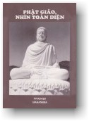
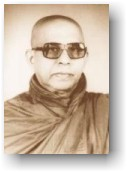

|
BuddhaSasana Home Page |
Vietnamese, with Unicode Times font |
|  |
Phật Giáo, Nhìn Toàn Diện
Hòa thượng Piyadassi Trung tâm Narada, Seattle, Hoa Kỳ, xuất bản, 1995. |
 |
|
-15- LỄ XUẤT GIA TRONG PHẬT GIÁO NGUYÊN THỦY T ín dồ theo Phật Giáo có bốn hạng người: tỳ khưu, tỳ khưu ni, thiện nam và tín nữ (hàng tứ chúng: bhikkhu, bhikkhunì, upasaka, upasikà). Giáo Hội tỳ khưu ni của Phật Giáo Nguyên Thủy (Theravàda Bhikkhunì Sàsana) đã chấm dứt; tuy nhiên, vẫn còn những vị nữ tu sĩ Phật Giáo. Do đó ngày nay chỉ còn Giáo Hội tỳ khưu, cùng với các vị nữ tu sĩ và thiện nam, tín nữ.Muốn tìm nguồn gốc của Giáo Hội Tỳ Khưu phải đi ngược dòng thời gian trở lại hai mươi lăm thế kỷ về trước, khi mà tại Vườn Lộc Uyển, ở Isipatana (ngày nay là Sarnath), gần Benares, trong xứ Ấn Ðộ, vào một ngày trăng tròn tháng Bảy, Ðức Phật Gotama ngỏ lời cùng năm vị đạo sĩ mà trước kia là bạn đồng tu với Ngài, và soi sáng cho họ con đường chân chánh, Bát Chánh Ðạo, dẫn đến tĩnh lặng, thành đạo, giác ngộ và Niết Bàn. Diễn biến này được gọi là Chuyển Pháp Luân (Dhamma-cakka). Năm vị đạo sĩ lãnh hội lời dạy, và trở thành tín đồ của Ðức Phật. Với sự công bố Giáo Pháp lần đầu tiên, và với năm vị đạo sĩ được cải hoá, Vườn Lộc Uyển trở thành nơi chôn nhau cắt rún của cơ bản Phật Giáo (Buddha Sàsana), và của Tăng Già (Sangha), đoàn thể chư tỳ khưu, những người đệ tử đã xuất gia. Không bao lâu sau, năm mươi lăm vị khác do một thanh niên khá giả, Yasa, hướng dẫn, gia nhập vào Giáo Hội Tăng Già. Giờ đây có tất cả là sáu mươi vị đệ tử. Ðức Phật kêu gọi người giới tử xuất gia sa-di và tỳ khưu như sau: "Hãy đến đây này chư sư, Giáo Pháp đã được công bố tốt đẹp. Hãy sống đời phạm hạnh (brahmacariyam) để trọn vẹn chấm dứt đau khổ (dukkha)." Sau mùa an cư kiết hạ (vassa, từ tháng Bảy đến tháng Mười) năm ấy, Ðức Bổn Sư gởi ra đi sáu mươi vị đệ tử A La Hán (Arahat, đấng Trọn Lành) với lời khuyên nên công bố Giáo Pháp, Dhamma, bức thông điệp hòa bình của Ngài. Theo lời chỉ dạy, các vị đệ tử đi bộ cùng khắp xứ Ấn Ðộ để truyền bá Giáo Pháp, bức thông điệp trí tuệ và từ bi mới mẻ. Những người đàn ông và đàn bà, từ mọi tầng lớp trong xã hội đến nghe thông điệp của Ðức Bổn Sư đều tỏ ý muốn về với Ðức Phật và giáo huấn của Ngài. Trong những người này có người muốn xuất gia, gia nhập vào Giáo Hội. Từ nhiều nơi khác nhau, chư sư dắt họ về Ðức Bổn Sư để thọ lễ xuất gia. Tuy nhiên, những cuộc hành trình dài dẳng rất mệt nhọc cho cả hai, người muốn xuất gia và chư tăng dẫn về. Ðể tránh những bất tiện và khổ nhọc ấy, Ðức Phật cho phép hàng tỳ khưu chủ trì các buổi lễ xuất gia ở bất luận châu quận nào. Về phương cách xuất gia Ðức Phật giải thích cho chư sư như sau: "Trước tiên giới tử phải cạo râu, cạo tóc sạch sẽ, và đắp lên mình bộ y màu vàng nghệ. Sửa y ngay ngắn, chừa một bên vai (trái), giới tử phải đảnh lễ chư tăng, ngồi chồm hổm (nếu ngồi như vậy bất tiện, có thể quỳ) trước chư tăng, hai tay chấp lại, và nói: "Buddham saranam gacchàmi Dutiyampi Buddham saranam gacchàmi Tatiyampi Buddham saranam gacchàmi Con xin quy y Phật (Thầy), Con xin quy y Phật lần thứ nhì, Con xin quy Phật lần thứ ba, Vào thời xa xưa ấy, đó là phương cách mà người thiện tín thọ lễ xuất gia. Nhưng với thời gian, công thức ngắn gọn này đã được nới rộng vì nhiều người không được thích nghi và hạng người bất hảo cũng tìm cách xin gia nhập vào Giáo Hội. Ðến ngày nay thì trong lễ xuất gia Sa-di (Pabbajjà) giới tử phải đọc mười giới, thêm vào những câu quy y. Trong lễ thọ Cụ Túc Giới (Upasampadà) giới tử phải trải qua một cuộc hạch hỏi của những vị sư cao hạ. Ta có thể ghi nhận rằng những điều được thêm này là của chính Ðức Phật, không phải về sau ai khác đã thêm vào một cách độc đoán. Vì lẽ ấy khi cử hành lễ xuất gia Sa-di (sàmanera) hay xuất gia Tỳ khưu, mỗi chi tiết đều phải được thận trọng tuân hành đầy đủ. Trong Giáo Hội Tăng Già, một thầy sa-di có bổn phận phải hành trì mười giới, phải học Giáo Pháp và Giới Luật (Dhamma-Vinaya) với một vị tỳ khưu, phải phục vụ các vị sư cao hạ, phải lo chuẩn bị để có đủ tư cách thọ lễ xuất gia tỳ khưu. Danh từ Sàmanera (samana + nera) theo nghĩa từng chữ là "con" (nera), của "nhà sư" (samana), trong ý nghĩa sa-di phải được một nhà sư hiểu biết và có đủ khả năng, dạy dỗ, chăm sóc và khép vào khuôn khổ giới luật. Sa-di không cần phải nhập hạ (vassa) như chư vị tỳ khưu. Sa-di phải có đủ hai mươi tuổi, không trước hơn, mới có thể thọ lễ xuất gia tỳ khưu. Nhưng không phải chỉ đủ tuổi là được; nếu thiếu tâm trí sáng suốt, không có học Giáo Pháp và Giới Luật cần thiết để sống đời tỳ khưu, thì không thích nghi để thọ Cụ Túc Giới, trở thành tỳ khưu. Một thầy tỳ khưu có bổn phận phải thọ trì những Giới Bổn (Pàtimokkha). Có tất cả 220 (227) giới. Khó mà chuyển dịch danh từ Bhikkhu một cách đầy đủ. Hai chữ "nhà sư" có thể được xem là gần nhất, nơi đây ta phiên âm là Tỳ khưu. Những danh từ Thera và Mahà Thera chỉ là những tước vị. Một vị tỳ khưu có mười tuổi hạ, tức đã có nhập hạ (vassa) được mười lần hay hơn nữa, thì được gọi là Thera (theo nghĩa trắng là trưởng lão hoặc một nhà sư cao hạ), và một vị đã có hai mươi hạ, vassa, thì có thể được gọi là Mahà Thera. Nhưng vị nào cũng vẫn là bhikkhu, tỳ khưu, và như Dhammapada, Kinh Pháp Cú, dạy: "Không phải chỉ vì có đầu bạc mà được
gọi là Thera. "Bên trong vị nào có chân lý và chánh
hạnh, Danh từ "priest" trong tiếng Anh, hay linh mục, không thể dùng để thế vào chữ bhikkhu, bởi vì các nhà sư Phật Giáo không cử hành những nghi thức cúng thần linh, không làm những pháp Bí Tích và không rửa tội. Một nhà sư Phật Giáo lý tưởng không thể, và không nhân danh là trung gian giữa con người và một quyền năng "siêu thế"; bởi vì Phật Giáo dạy rằng mỗi cá nhân chỉ riêng mình lãnh lấy trách nhiệm giải thoát cho mình. Do đó không cần phải nhờ đến một vị "trung gian" ban thưởng ân huệ. "Chính tự các con phải kiên trì cố gắng. Chư Phật chỉ soi sáng con đường." (Dhammapada, Kinh Pháp Cú, câu 276). Mục đích của sự xuất gia (pabbajjà, ra đi, đi tới) là xây lưng lại, tự tách rời ra khỏi những tư tưởng có liên quan đến nhục dục (kilesa-kàma) và ngũ trần (vatthu-kàma). Do vậy, đây thật sự là tự hy sinh, và động cơ thúc đẩy đến quyết định này phải thành thật thì hậu quả mới thật sự là hoan hỷ và an vui. Ðây không phải là điều mà tất cả mọi người đều có thể làm; bởi vì từ bỏ, để lại sau lưng cuộc đời hấp dẫn và thú vị không phải là chuyện dễ. Không phải mọi người đều có thể cắt đứt, tách lìa hẳn thế gian và tất cả những gì hình như tốt đẹp của thế gian. Và Ðức Phật không trông đợi tất cả những tín đồ của mình đều trở thành sư hay đạo sĩ. Một lần nữa, Dhammapada, Kinh Pháp Cú dạy: "Xuất gia là khó, Trong Phật Giáo, một nhà sư có đủ tự do để rời khỏi Giáo Hội, nếu nhận thấy mình khó giữ nếp sống của thầy tỳ khưu chân chánh. Không có bất luận cưỡng bách hay ép buộc nào, và người trở lại đời sống tại gia cư sĩ, không phải mang dấu vết hay tì tích gì. Nên hiểu biết rõ ràng và ghi nhớ rằng thành thật xuất gia không phải là đào tẩu. Những ai không thấu hiểu ý nghĩa thật sự của sự từ khước thế gian và những ai xét rằng các nhà sư là những "đạo sĩ" giả vờ, những người biếng nhác, hạng người vô giá trị, là những ký sinh trùng của xã hội, vội vã kết luận rằng "xuất gia" là một hình thức đào tẩu, trốn tránh nhiệm vụ, một lối sống vị kỷ. Không có chi sai sự thật hơn. Nhà sư lý tưởng, vị tỳ khưu, là người có nếp sống vị tha, trong ý nghĩa cao cả nhất của danh từ, thọ lãnh của xã hội rất ít và cho ra thật nhiều. "Như loài ong, chỉ hút mật của hoa rồi bay đi mà không làm tổn hại đến hương và sắc của hoa, cùng thế ấy người thiện trí đi đó đây trong làng mạc, phải như vậy." (Dhammapada, Kinh Pháp Cú, câu 49). Vài người trong thế giới Tây Phương cảm nghĩ rằng xuất gia là một hình thức đào tẩu. Nói rằng nhà sư Phật Giáo là người trốn tránh nhiệm vụ trong xã hội thì quả là không đúng. Họ thật sự dấn thân vào thế gian hơn người thường; bởi vì trước khi từ bỏ cuộc sống tại gia, họ ở trong một giới thân cận nhỏ bé -- cha mẹ, anh em, thân bằng quyến thuộc. Khi từ khước thế gian và những gì trong thế gian nhỏ bé ấy, họ rời bỏ cái nhóm nhỏ hạn hẹp và trở thành người của toàn thể thế gian. Có dấn thân và cũng có buông bỏ. Họ sống trong thế gian, nhưng không phải là người của thế gian. Ðối với họ, toàn thể thế gian là một gia đình và họ đối xử với tất cả mọi người như nhau. Họ phá vỡ những ranh giới đã phân chia con người trong xã hội. Ðúng thật là đã có nhiều đổi thay với thời gian, nhưng nhà sư Phật Giáo chân chánh đã từ khước những thú vui trần tục, gia công sống đời tự ý nghèo nàn và hoàn toàn độc thân với mục đích vị tha phục vụ kẻ khác trong nếp sống của một vị tỳ khưu, và cố gắng thành đạt trạng thái tâm giải thoát. Trong phạm vi hoạt động của một vị tỳ khưu, có hai lối sống: một là liên tục hành thiền (vipassanà-dhura), và lối sống khác là hành thiền một phần thời gian, phần kia là nghiên cứu học hỏi và dạy Giáo Pháp (gantha-dhura). Mỗi vị tỳ khưu phải chọn một trong hai lối sống ấy, tùy theo bẩm tánh, tuổi tác và môi trường sống của mình. [1] Bộ y mà vị sa-di hay vị tỳ khưu đắp lên mình, chính đó là y phục, và các thầy phải mặc luôn luôn, không phải chỉ trong những trường hợp đặc biệt. Ðể kết luận, phải nói rằng lễ xuất gia tỳ khưu, thọ Cụ Túc Giới, phải được cử hành trong một ngôi nhà có làm lễ kiết giới (simà), không phải ở bất luận nơi nào mà ta cho là tiện. Chú thích: [1] Muốn có nhiều chi tiết hơn về đời sống của một vị tỳ khưu, xin đọc "The Buddha's Ancient Path", cùng một tác giả (Kandy: BPS), Chương 8. -ooOoo-
Ðầu trang |
Mục lục |
01.a |
01.b |
02 |
03 |
04 |
05 |
06 |
07 |
08 |
09 | |
Chân thành cám ơn Bác Phạm Kim Khánh đã gửi tặng bản vi tính (Bình Anson, 10-2002)
[Trở
về trang Thư Mục]
last updated: 05-10-2002